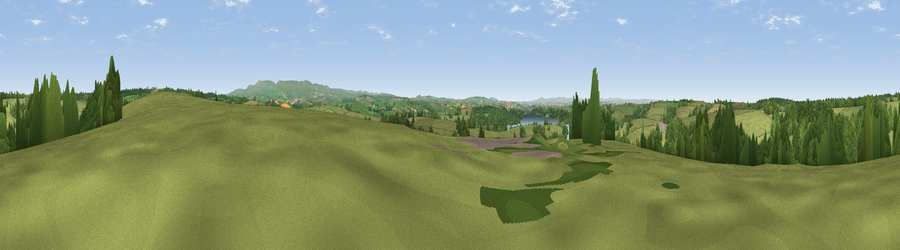

Viewpoint near Germansweek
#18303 in England · top 31% of its area beats it · near Germansweek · footpathWhere it is
The exact computed spot (SX 44275 93525). Click the marker for map links.
Public access: a public right of way passes within 2 m of this spot. Computed from Natural England's CRoW access layer and OpenStreetMap rights of way — not the legal definitive map. Always verify locally.
The view, rendered

A 360° render of this exact spot computed from the terrain model, tree cover and land cover — summer colours, afternoon light, calibrated against photographs of famous viewpoints. Real trees, hedges and buildings will differ in detail.
The panorama
Grey silhouette: terrain skyline in each direction (720 bearings, Earth curvature and refraction included). Dashed green: skyline with trees (+15 m) and buildings (+8 m) as obstacles. Blue strip: how far the ground is visible on each bearing.
Where the view opens
Wedge length = distance to the farthest visible ground on that bearing (vegetation-aware). Rings at 10, 25 and 50 km.
What fills the view
76% grassland · 20% woodland · 2% water · 1% cropland ·
Angular shares of the visible panorama (visual magnitude), not map area. Landscape diversity 0.31 (0–1 Shannon).
Key numbers
More beautiful places nearby
The staircase of upgrades: each row has a higher view potential than everything closer. Driving times are estimates from straight-line distance, calibrated against real road routing — check an actual route before setting out.
| Place | Direction | Drive | Score |
|---|---|---|---|
| Viewpoint near Beaworthy | NNE · 4 km | ~10 min | 57.3 |
| Viewpoint near Bratton Clovelly | ENE · 5 km | ~10 min | 60.9 |
| Sourton Tors | ESE · 11 km | ~20 min | 74.8 |
| Viewpoint near Sourton | ESE · 12 km | ~22 min | 75.7 |
| Great Links Tor | ESE · 13 km | ~23 min | 77.8 |
| Yes Tor | ESE · 14 km | ~26 min | 78.5 |
| Kit Hill | SSW · 23 km | ~38 min | 80.3 |
| Viewpoint near Dousland | SSE · 26 km | ~42 min | 81.0 |
50.72043, -4.20744 · source: screening · position refined by local search. Computed location — check access rights before visiting.